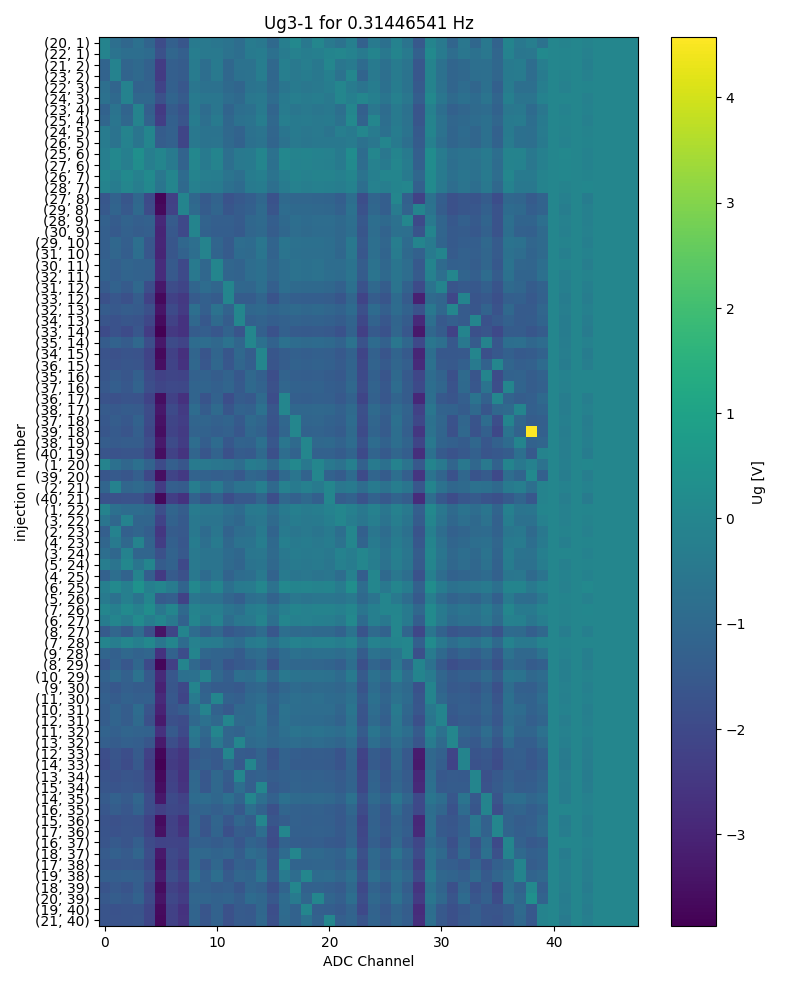

Note
Click here to download the full example code
EIT-FZJ: Analyze DC voltages at electrodes during injections¶
import matplotlib.pylab as plt
import reda
import reda.importers.eit_fzj as eit_fzj
adc_data = eit_fzj.get_adc_data('data_eit_fzj_2013_ug/eit_data_mnu0.mat')
with reda.CreateEnterDirectory('output_04_ug3'):
frequencies = list(
adc_data.swaplevel(0, 2).groupby('frequency').groups.keys())
# frequency to plot
frequency = frequencies[1]
fig, ax = plt.subplots(
1, 1, figsize=(20 / 2.54, 25 / 2.54),
sharex=True, sharey=True)
subdata = adc_data.swaplevel(0, 2).loc[frequency]
im = ax.imshow(
subdata.swaplevel(0, 1, axis=1)['Ug3_1'].values,
interpolation=None,
)
ax.set_aspect('auto')
ax.set_yticks(list(range(subdata.index.shape[0])))
ax.set_yticklabels(subdata.index.values)
cb = fig.colorbar(im, ax=ax)
cb.set_label(r'Ug [V]')
# ax.set_ylim(0, 10)
ax.set_title('Ug3-1 for {} Hz'.format(frequency))
ax.set_ylabel('injection number')
ax.set_xlabel('ADC Channel')
fig.tight_layout()
fig.savefig('plot_ug3-1.pdf', dpi=300)